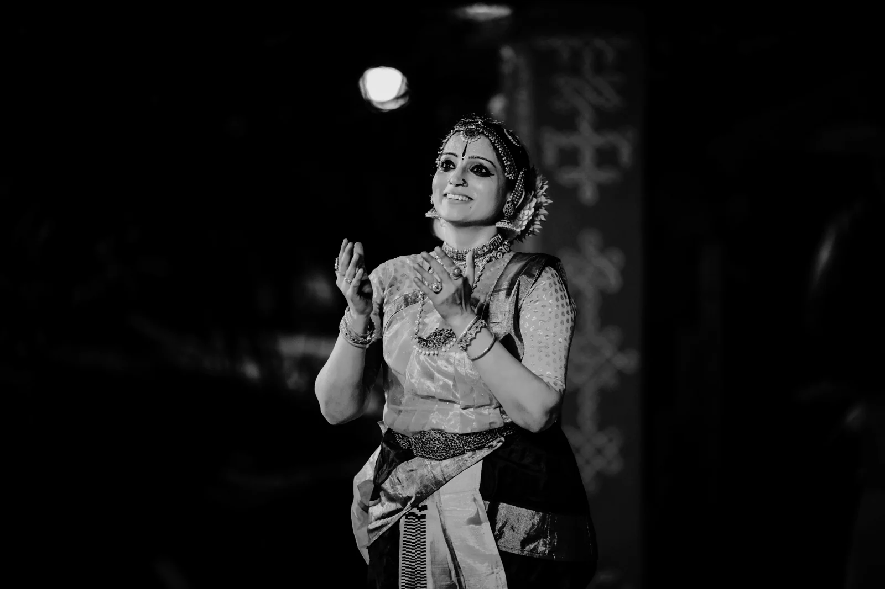
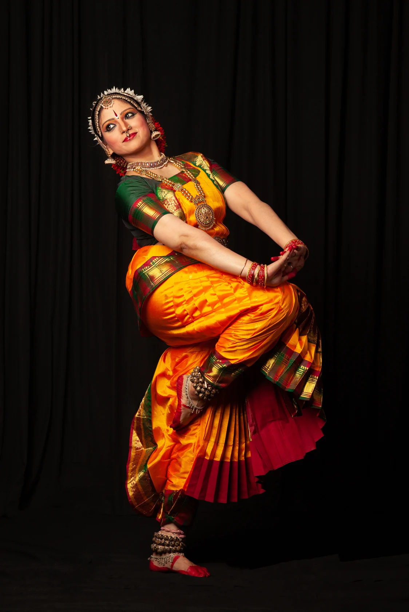
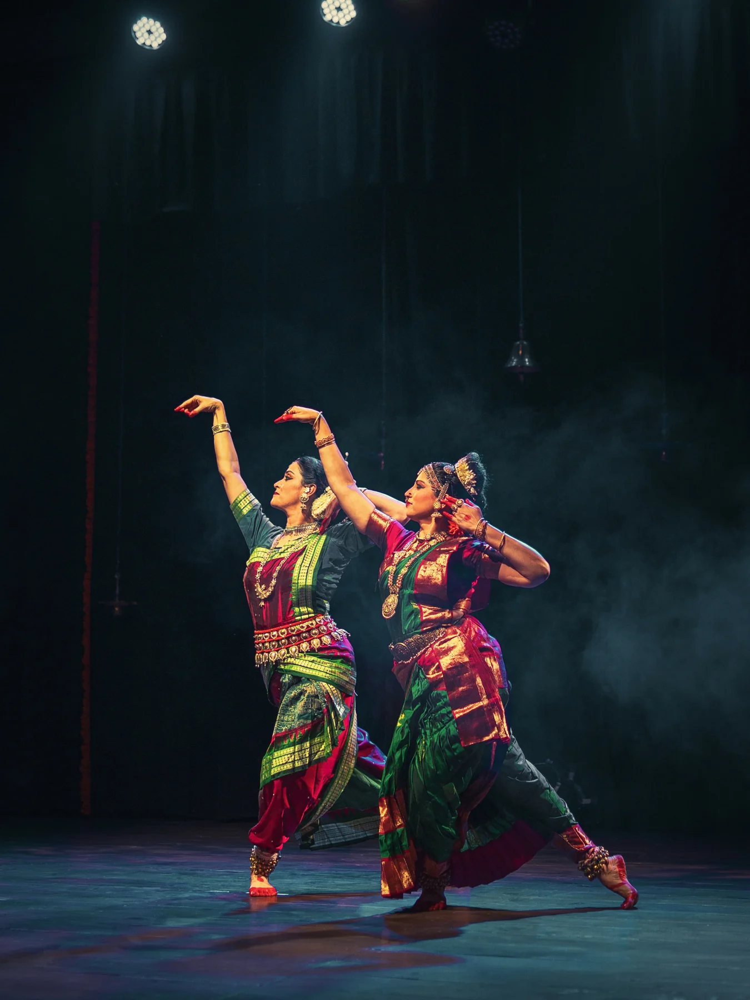
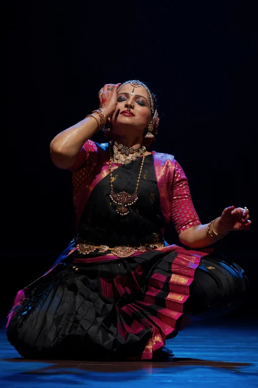

Manomanthana
Exploring struggle, silence, and stillness.
An inner journey through saint-poet Thyagaraja’s kritis, English prose and poetry, and the dramatic language of Kuchipudi.
Discover the productionKUCHIPUDI · CHOREOGRAPHY · EDUCATION
Vidushi Srividya Angara Sinha
Rooted in tradition. Moved by possibility.
A journey through rhythm, expression,
and the joy of being.

THE ARTISTE
For Srividya, dance is happiness — the most potent manifestation of a joyous heart.
Performer.
Choreographer.
Educator.
Always a student.
For more than three decades, Srividya Angara Sinha has explored the expressive possibilities of Kuchipudi. Her work brings together the rigour of a classical tradition and the curiosity to find new ways of telling a story.
A Gold Medalist in the Master of Performing Arts programme at the University of Hyderabad, she trained initially with Smt. Vijaya Valli Priya and continues her practice under Sri Jaikishore Mosalikanti of Chennai. A computer science engineer by education, she followed her love for dance from a career in software into performance and choreography.
Based in Bengaluru, she is co-founder of Citsabhā Collective and Artistic Director of Citsabhā Centre for Kuchipudi and Allied Arts. Her practice extends across performance, collaboration, teaching, and arts outreach.
Read the full artist profile PDFGKF Visiting FellowIIT Kharagpur
Guest FacultyIIT Hyderabad
Distinguished Alumni AwardVNR VJIET
SELECTED PRODUCTIONS
Original explorations and creative conversations,
within and across classical traditions.

Exploring struggle, silence, and stillness.
An inner journey through saint-poet Thyagaraja’s kritis, English prose and poetry, and the dramatic language of Kuchipudi.
Discover the production
Two traditions. A shared conversation.
A jugalbandi with Odissi artiste Shubha Nagarajan, weaving two distinct movement languages into a single, unfolding story.
Discover the productionMORE FROM THE REPERTOIRE
A story from the Mahabharata set to Beethoven’s Fifth Symphony. Presented at the 27th Annual Choreographers’ Showcase in Maryland and the Norristown Dance Festival.
A Citsabhā Collective production with Shubha Nagarajan, tracing the extraordinary birth, courage, and divinity of the warrior-goddess of Madurai. This 30-minute work forms the concluding offering of Samaagati.
A collaboration with Shubha Nagarajan in Odissi and Gowri Sagar in Bharatanatyam, presented as part of the Infosys Foundation and Bharatiya Vidya Bhavan Fusion Music and Dance festival.
Original choreography on Radha, presented in a production featuring Kuchipudi soloists Rekha Satish, Prateeksha Kashi, Rajashree Holla, and Srividya Angara.

TEACHING & OUTREACH
From the classroom to the community, Srividya creates spaces to encounter Kuchipudi — its movement, its music, and its capacity to tell a story.
Explore training through Citsabhā Centre for Kuchipudi and Allied Arts, Bengaluru.
Introductions and immersive experiences for schools, colleges, and cultural institutions, including outreach through SPICMACAY.
Guest Faculty at IIT Hyderabad in 2024 and 2025; GKF Visiting Fellow at IIT Kharagpur in 2025; Wellness and Life Skills course instructor at IIT Tirupati in 2026.
IN PERFORMANCE
The stillness between movements.
The stories held in a gesture.
A selection from the artist’s performance archive. Select a photograph to view.
IN THE PRESS
Srividya has a commanding stage presence and performs with lilting grace highlighting the distinct style of Kuchipudi.
…steeped in grace and emotion… explored the profound inner conflicts of human mind and heart, beautifully illustrated by Thyagaraja’s kritis.
While Kuchipudi took movement to a dizzying pace, Odissi revealed the slowness of movement and the rounded quality of its idiom… a unique aesthetic.
BEGIN A CONVERSATION
For performances, collaborations, workshops,
and learning Kuchipudi.
Citsabhā Collective
Bengaluru, India